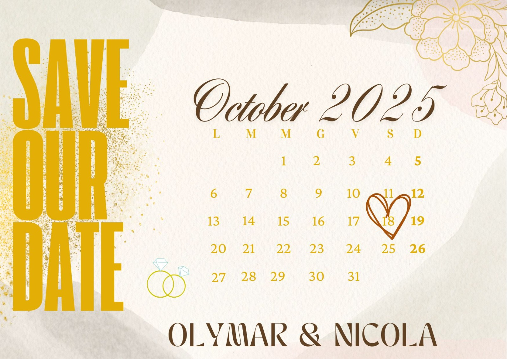

Our Story

Who would have thought that a chance meeting at a university event in December ‘12 would be the first step in a fantastic journey together?
Busy as we were with classes, university exams, parties, volunteering, and work, we still found the time to get to know and like each other.
However, with our countless commitments and various stays abroad, we had also begun to measure our story by gross time spent together… and actual time spent at least in the same country.
It was 2018, and finally, with all our studies completed, we decided to "settle down" (or so we thought) and move in together. And they lived happily ever after?

Not quite, and not immediately! Before we could even unpack our bags, opportunities started pouring in... from trips around the world (more or less long) to leaving the beautiful and windy Trieste to venture into unfamiliar territories like Polesine, resuming studies, and relocating to Treviso first and then to Falzè.
Not to mention the countless and essential travels, the ever-present volleyball matches, running at all hours and in any place, festivals, and concerts to stay forever young inside...
And here comes the twist (aka: The Proposal). After so many years together, some in different countries but at least as many shared under the same roof, it was time to make it official.
Among deadlines, dreams, and wishes, the proposal finally materialized… even though not exactly as planned (more details will follow during the event).

But well… we’re getting married!!
Now comes the most important part: we want you to be with us on the big day! Because without you, our family, our friends, the people who make us laugh, cry, and get mad, it wouldn’t be the same.
Of course, after the ceremony, we’ll be waiting for you to celebrate properly: great food, music, dancing, and lots of fun. And yes, there will also be embarrassing moments to capture for social media (but no videos during the toasts, we’re serious).
Wedding Details
The ceremony will take place on October 18. We can’t wait to celebrate with you!
RSVP
Please confirm your attendance by July 1, 2024. You can contact us via email at nicola.stella90@gmail.com or by phone at 327 1777146.
Photo Gallery
Discover some of the most beautiful moments we've shared together: